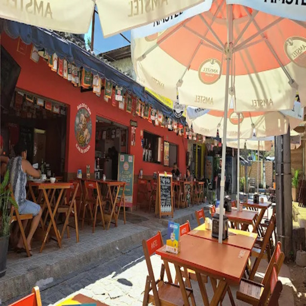
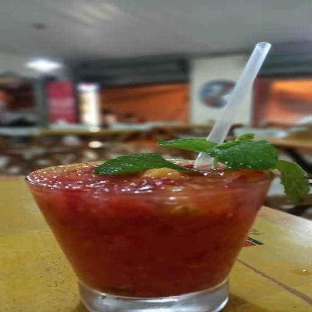
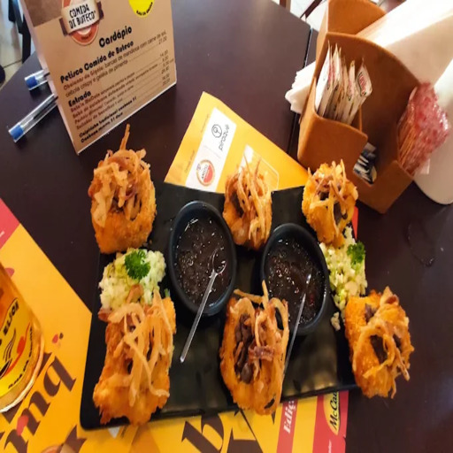
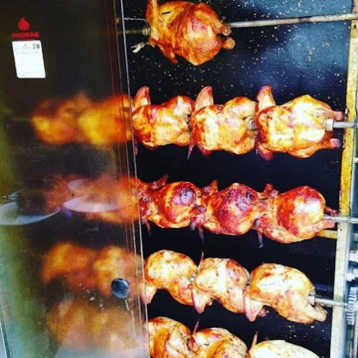
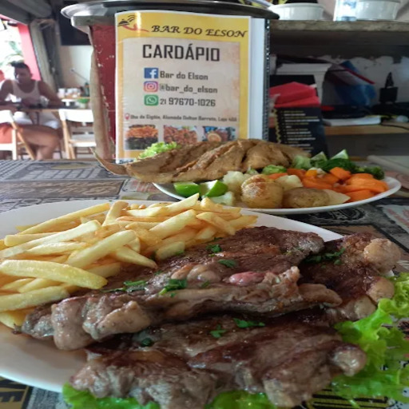
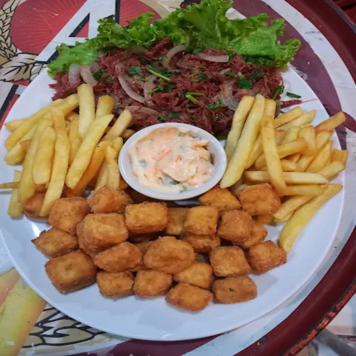
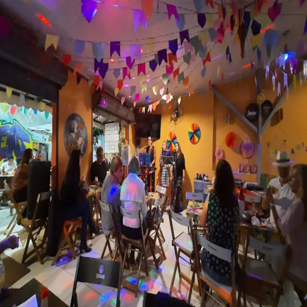
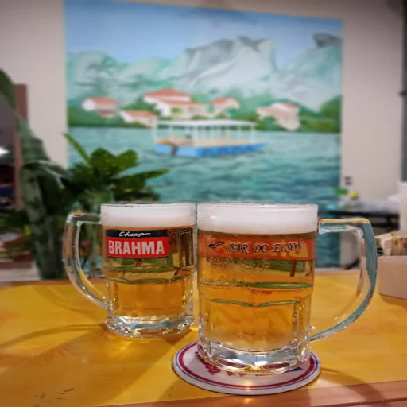

Bar do Elson
Um autêntico boteco raiz com o melhor frango assado da Ilha, cerveja gelada e futebol.









Sobre o Boteco
Localizado no coração da Ilha da Gigóia, o Bar do Elson é um daqueles botequins que rapidamente se tornaram parte da vida da ilha. Criado pelo dono Elson, o bar rapidamente conquistou moradores e visitantes com seu clima simples, acolhedor e cheio de personalidade.
O espaço tem a essência de boteco raiz, onde as pessoas chegam para comer bem, conversar e aproveitar o dia à beira da lagoa. O grande destaque da casa é o famoso frango assado, considerado por muitos frequentadores o melhor frango assado da Ilha da Gigóia, suculento e cheio de sabor.
Além da comida, o bar também virou um ponto de encontro para assistir jogos de futebol, reunindo moradores e visitantes que se juntam para torcer, beber uma cerveja gelada e aproveitar o clima descontraído típico das ilhas.
Outro motivo de destaque é que o bar participa do tradicional concurso gastronômico Comida di Buteco, evento que reúne alguns dos melhores botecos do país e celebra a cultura da comida de bar brasileira.
A Experiência
- ✓ O Melhor Frango Assado
- ✓ Transmissão de Jogos
- ✓ Comida di Buteco
- ✓ Clima de Boteco Raiz
Ambiente
Simples, acolhedor e cheio de personalidade.
Destaque
🍗 O famoso frango assado, considerado o melhor da região.